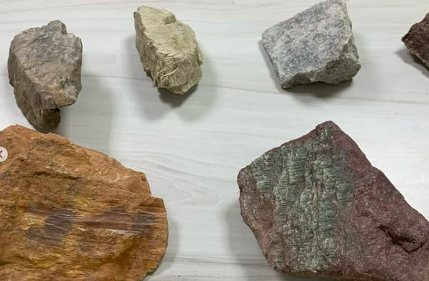
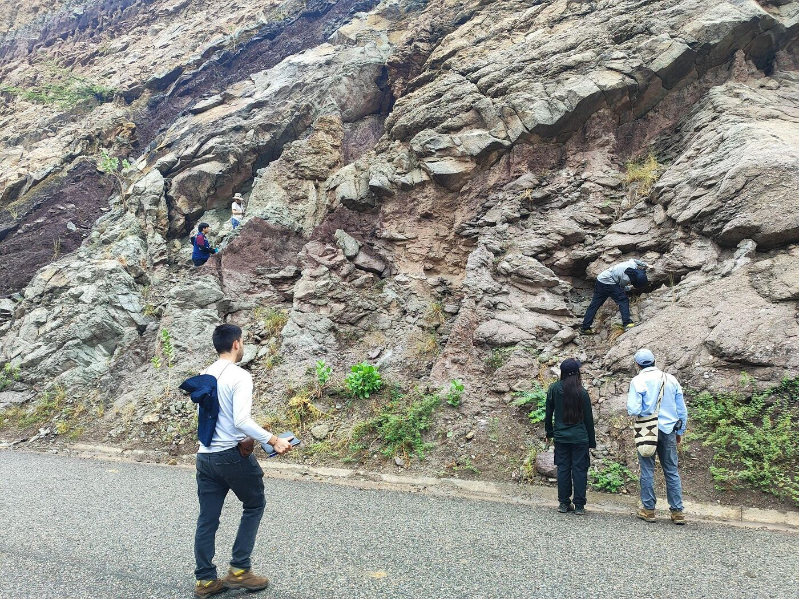

¿Quiénes somos?
El SEGET es el Semillero de Geología Estructural y Tectónica de la Escuela de Geología de la Universidad Industrial de Santander, adscrito al Grupo de Investigación en Geología Básica y Aplicada (GIGBA).
Cómo se forma y evoluciona la Tierra
Somos estudiantes de Geología interesados en comprender cómo se forma y evoluciona la Tierra. Nos enfocamos en estructuras como fallas, pliegues y fracturas, porque a través de ellas podemos interpretar los procesos tectónicos que han ocurrido en una región y entender cómo se ha formado y transformado el paisaje que conocemos.
Nos motiva entender cómo esas estructuras influyen directamente en las comunidades: algunas están relacionadas con los sismos o con los movimientos en masa. Por eso queremos estudiarlas y también acercar ese conocimiento a la gente, para que comprenda mejor el territorio que habita y reconozca la importancia de la prevención y la gestión del riesgo.



Formación, campo y divulgación
-
Aprendemos juntos
Cada semana hay una charla o un taller: cortes geológicos, criterio de Riedel, regla de las V, mecanismos focales, análisis de esfuerzos y más, guiados por docentes e integrantes.
-
Salimos al campo
Medimos datos estructurales en afloramientos reales y luego los procesamos en la universidad con software especializado.
-
Compartimos lo que aprendemos
Stands, ferias y jornadas con colegios y comunidades para explicar la geología de forma cercana y fácil de entender.
Lo que hemos aprendido
“Investigar no es solamente buscar información o analizar datos, sino también hacerse preguntas, discutir diferentes ideas y aprender de los demás.”
“La divulgación científica puede ser un proceso recíproco: no solo enseñamos, también escuchamos y aprendemos de las comunidades.”

Por qué lo hacemos
Cuando investigamos nuestro territorio entendemos procesos que muchas veces pasan desapercibidos y los convertimos en información útil para estudiantes, comunidades y otros actores. Lograr que una persona conozca mejor su territorio y reconozca la importancia de la prevención ya es una forma de generar impacto.
Con quiénes trabajamos
Grupo GIGBA
Grupo de Investigación en Geología Básica y Aplicada de la UIS, al que está adscrito el semillero.
Alcaldía de Cepitá
Apoyó la logística y el acercamiento con la comunidad en el proyecto de extensión de 2026.
I. E. La Laguna
Colegio de la Mesa de Los Santos donde desarrollamos la jornada de geoeducación de 2025.
Semillero SIGAC
Con quienes organizamos el curso de interpretación manual de líneas sísmicas.
Semillero Patrimonio Geológico
Invitados a la preparación del proyecto en Cepitá y el Cañón del Chicamocha.
Comunidad UIS
Estudiantes de todas las carreras que participan en nuestros stands del UFEST y las ferias de semilleros.
¿Estás pensando en unirte?
Anímate, incluso si sientes que todavía no sabes lo suficiente. Un semillero es precisamente un espacio para aprender, equivocarse, preguntar y descubrir qué temas te apasionan.